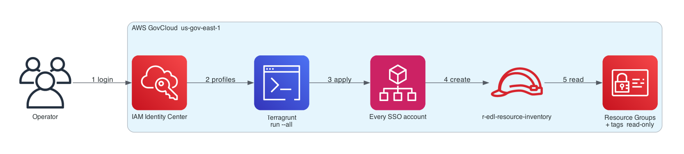
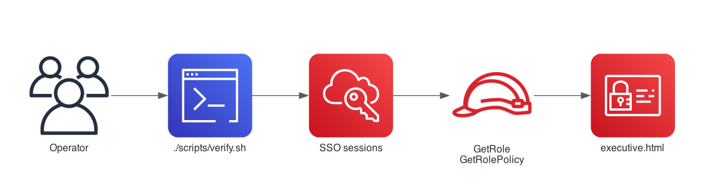
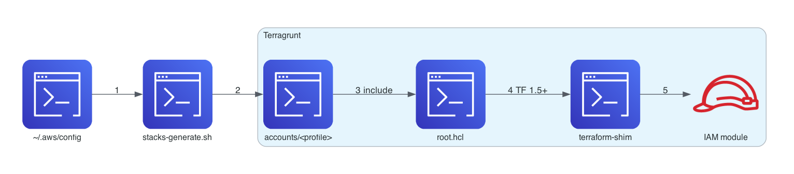

Same Terragrunt project. Three audiences. Branch feature/inventory-sso-v3
Terragrunt deploys the same read-only IAM role across every IAM Identity Center account. Python then proves the role exists and matches policy. Leadership opens one HTML file.

| Allowed | Not allowed |
|---|---|
| Read Resource Groups | Create, change, or delete resources |
Read tags (tag:Get*) | Write tags or IAM |
| Assume only from Identity Center roles | Long-lived access keys on the role |

Ask operations for reports/executive.html.
reports/executive.htmlAuthenticate, generate stacks, apply with Terragrunt, then verify. Never run terraform in this repo. Never run terragrunt run-all (old command).
cd ~/workspace/inventory-sso ./scripts/doctor.sh ./scripts/sso-login.sh --all ./scripts/sso-profiles.sh --check ./scripts/stacks-generate.sh cd infra/live/accounts terragrunt run --all plan terragrunt run --all apply
Always run --all from infra/live/accounts, not from infra/live.
./scripts/verify.sh
| Open | Who |
|---|---|
reports/executive.html | Show the boss |
reports/role-verify.html | If a row failed |
| You see | You do |
|---|---|
unknown command: run-all | Use terragrunt run --all |
| Terraform 0.12.31 | module load terraform/1.5 then export TG_TF_PATH=$(command -v terraform) |
| Profile INVALID / DENIED | aws sso login --profile NAME |
| Role MISSING | Apply first, then verify again |
| One account only | cd infra/live/accounts/PROFILE && terragrunt apply |
cd infra/live/accounts terragrunt run --all destroy
Never destroy from verify-accounts.
Terragrunt is the operator path. Terraform exists only in infra/modules/. root.hcl generates the AWS provider, merges inputs, pins Terraform ≥ 1.5, and points terraform_binary at scripts/terraform-shim so iebcloud’s default 0.12.31 is never used.

| Layer | Path | Does |
|---|---|---|
| SSO | scripts/sso-login.sh | AWS CLI login per Identity Center start URL |
| Units | scripts/stacks-generate.sh | One terragrunt.hcl per SSO profile (gitignored) |
| Control | infra/live/root.hcl | include target, provider generate, tags, after_hooks |
| IAM | infra/modules/r-edl-resource-inventory | Role + inline policy + create-time checks |
| Read-only TG | infra/modules/verify-role | Data-only Terragrunt verify (no IAM writes) |
| Python | src/verifier.py | GetRole / GetRolePolicy across profiles |
| HTML | src/html_report.py | executive.html + role-verify.html |
| Sid | Actions | Resource |
|---|---|---|
| ViewSpecificResourceGroup | resource-groups Get/List/Search | arn:PARTITION:resource-groups:*:ACCOUNT:*/* |
| TaggingReadOnly | tag:GetResources, GetTagKeys, GetTagValues | * |
Trust: sts:AssumeRole + TagSession, principal account root, condition ArnLike aws-reserved/sso.amazonaws.com/*.
iam:GetRole) — else status missingsso.amazonaws.com and sts:AssumeRoleViewSpecificResourceGroup covers required Get/List actionsRESOURCE_GROUP_ACCOUNT_ID)TaggingReadOnly on *tag:GetTagKeysSSO failures are denied rows in HTML — the run still writes the report. Overall: pass / partial / fail.
./scripts/verify.sh # src/verifier.py evaluate_role() # src/html_report.py write_verify_html_reports()
include.expose — new Terragrunt cannot resolve it on run --allretryable_errors block on this CLIrun --all only from infra/live/accounts (or verify-accounts)